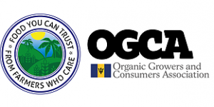

John Hunte, Organic Growers and Consumers Association of Barbados
John Hunte (via GEF)
My main intention in organic farming was to feed my family. As a young man growing up in London, I felt farming would be an ideal lifestyle in which to raise a family. There were no role models to follow in London as a fifteen-year-old, so I left the UK in my mid-twenties and came to live in Barbados, the birthplace of my parents. The uncle I came to is a medium-sized chicken farmer and in his opinion three areas afforded the average man a reasonable livelihood in Barbados; Construction, Tourism and agriculture.
My earliest experience in organic farming came after working with my uncle, a South American Construction company and a South Coast hotel. My application to lease agricultural land from the government was accepted in 1993 at almost the same time I had started a five-acre project with a group of young men, in a private land lease arrangement. By now my research on organic farming seemed like the only way to go, not only for personal health but also for the environmental impact.
After a couple of years, we opened a small fruit and veg shop in a rural parish and I became one of the members of a steering committee for a large co-operative with eighty or more members called the St. Andrews Small Farmers and Cottage Industry Co-operative. We proposed to government a takeover of two abandoned former sugar plantations. The proposal was accepted and in 1996 the Co-op was registered. A local farmers market was established for the members that year.
[Chefs4Dev] You are a farmer yourself and head of the Organic Growers and Consumers Association (OGCA) in Barbados. Could you tell us about yourself and how you got involved in organic farming? How did you end up leading a movement in organic farming?
I am the Secretary and one of the founding members of the OGCA and became more deeply involved in organics when the farmers market started and received some publicity. I was approached by Mr. William Hinds and the pioneer behind the solar water heater and the late Professor Oliver Headley to help establish an Environmental Park as a part of the Co-operative on the lands allocated to the farmers. This entity became known as the Bawden Environmental Park Group (BEPG) which maintained the development of an organic farm as a critical component of the Environmental Park.
This five-acre plot is set beside two spring fed ponds and was used as a base for hiking, biking and horseback riding tours along with a tour of the organic gardens. We were supported in this effort by the first certified green hotel on the island, the Casuarina Hotel. The visionary owner donated five comfortable tents and twenty-five mountain bikes to the BEPG and went on to make a stop at the location an integral part of their visitor tours. Local youth and people in the community provided services to the BEPG as tour guides and crafts persons: building solar water stills for schools, holding workshops on renewable energy and organic farming and converting the plantation house to an off grid building.
In 1996 I was invited to sit as a member of an advocacy group that wished to promote greater use of and access to organic produce. Members of this small group included the owner of a leading supermarket at the time, Andrew Bynoe, of Carlton and A1, our own Ena Harvey, who at the time was a food safety specialist, two alternative medical practitioners, a supplier of organic farm inputs and a conventional medical Doctor. As the only farmer in the group, my task was to try to bring together other growers that could form the production base for the organisation. This is how the OGCA was formed and it was really a consumer driven Association.
The BEPG became the umbrella group for the OGCA and accessed grants and training opportunities for the farmers. One of the first joint ventures was a farm dinner and overnight camp at Bawden. OGCA members prepared food for the visitors after giving them a tour of the farm, but we forgot plates or cutlery and had to use pumpkin leaves, as plates and dry corn husks as spoons. The visitors loved it. A few people did not want to leave the following morning. The BEPG went on to help create a Sea Island Cotton cottage industry and a portable solar electric generator.

Could you tell us more about the Organic Growers and Consumers Association (OGCA), its main achievements as well as challenges ahead? Usually producers and consumers are different organizations, so it is interesting that you brought them together. Could you tell us more about the members, products etc.?
The OGCA was registered as a NGO in 1998 and was invited in 1999 to participate as co-hosts in a CD ROM organic training program that was provided by IICA. This called for growers to put together an organic farm management plan. This completed plan was used as an entry requirement for acceptance into the Association. Over the next four years, up until 2001, this training course was utilised to train as many as thirty-five farmers. One of our most renowned trainees was HRH the Prince of Wales.
We had written to HRH in 2000 and in 2001 the British High Commission facilitated a visit to the UK for a Caribbean organics meeting which included Fair Trade and organic growers, along with the four leading British supermarket chains. Prince Charles addressed the gathering and I was able to have a one to one conversation with him. It was at this time that I handed HRH the CD ROM that we were using for training. On my return to Barbados we learnt that the Prince had accessed the disc.
Between 2001 and 2003, the relationship between the OGCA and the BEPG saw interns from the University of Toronto working with the OGCA on farms and projects. The OGCA facilitated the stay of a Director of the Centre for Alternative Technology (CAT) from Wales in the UK. Dr. Davies exposed us to the certification requirements as used by the British Soil Association. This information was shared with the Ministry of Agriculture. One of our members traveled to Guatemala, with the Ministry's head of Crop Extension, for a week-long conference on organic farming in central America, another member spent a month in the UK working at the CAT in the UK.
The OGCA began an organic veg box delivery program. In this we became a victim of our own success as the demand and logistics for delivery were beyond our production and financial ability. As a result we redirected our joint sales towards direct market stall sales in Bridgetown.
In 2004 the Ministry of Agriculture added a section to the farm incentives program that was exclusively for the development of organic agriculture. 2005 saw the OGCA working with other stakeholders to develop and customize a national organic certification standard, based on international standards. We conducted another year of new farmer training based on classroom and practical on farm training. This focus was funded by the EU as a part of the Caribbean Regional Environment Program (CREP). Thirty more farmers were trained in this period. This training took place on our BEPG farm.
From 2007 to the present the OGCA has been involved with several projects, including Willing workers on organic farms (WOOFING), as a registered group in the Caribbean. Some of these projects included: permaculture design training, the development of school gardens with Slow Food, organic inspector training. We undertook a UNDP SGP funded program with the disabled to establish rainwater harvest and seedling nurseries at their homes. We work closely with McGill University through their internship program at the local Belairs Research Institute on a variety of projects.
Our growers membership has increased with new registrations in the past two years and members are gradually developing secondary products such as organic Cassava flour, dehydrated banana, condiments and pepper sauces, health juices and herbal iced teas.
Member farms are located throughout the island with some farms representing groups who offer agricultural services as well as input products like fertilisers and seedlings. A couple of members produce free range chickens and eggs. Other members own small cafes where they try to use all organic produce.
We are affiliated, myself as co-founder, with the Barbados chapter of SLOW FOOD, which encourages chefs to use more organic and indigenous varieties in their menus produce.
Our current project is to establish the protocol and complete infrastructure to have our growers certified as organic, to rebrand our organisation and to create a video training manual for all registrants.
I believe the growing demand for organics goes hand in hand with certified farms and products. Is certification still a challenge for organic farmers in Barbados? Does it help you to increase new markets such as the tourist-related sector?
One of our challenges is coordinating our production output to meet the consistency and variety that suits the demand. Some of these challenges are related to inadequate finance, lack of human capacity both in manpower and technical knowledge and the need for a physical plant or structure from which to centralise and operate. Increasing markets in the tourism sector can be very useful if we could address and overcome the challenges that we face.
How is your collaboration with the Chefs? I have heard that you promote Farm to Table dinners with some Chefs sharing your values and approaches. Could you tell us about your experience and the opportunities ahead?
Working with local chefs on farm to table events has proven useful in starting a relationship but is not sustainable as an events based program. Most chefs have their own procurement system to which they have become accustomed and comfortable.
For the OGCA to make an impact, that brings more organic produce onto the menu requires us (OGCA) to develop a one stop shop and until then for committed chefs to work with a menu that is flexible enough to include the organic produce as it becomes available.
There is also the challenge of having the organic movement undermined by promoting the eat local campaign. Unfortunately, not everyone appreciates the difference in so much that local produce, grown conventionally does measurable damage to the environment and to the health of producers and consumers.
A part of our future goals is to persuade conventional growers to convert to organic techniques and inputs. This advocacy, which has been slowly adopted as a leading seller of agri-chemicals, now boasts a larger selection of organic inputs and promotes them in a more prominent space than conventional chemicals.
The sustainability of the venture still requires solving the challenges mentioned earlier. One possible solution to those challenges is our plan to rebrand the OGCA as a co-operative which can see both farmers and consumers (including chefs, restaurants and interested hotels) investing in the co-op as shareholders.
If we can match that internal commitment with visionary grants, we should be in a position to establish the required food procurement and distribution facility, additional manpower for operations (from the none grower members) and working capital for the growers. Having a working centralised location can be an encouragement to conventional growers to convert their production over a period of time. Ultimately we would like to be able to promote Barbados as the organic island. That’s a long way from growing healthy food to feed my family!